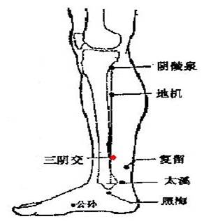

阴虚质调理方法
1. 调体专用产品
【名称】甘梅饮
【食用方法】每次1-2袋，以适量温开水冲调食用，每天2次。
2. 情志调摄
宜加强自我修养、培养自己的耐性，尽量减少与人争执、动怒，不宜参加竞争胜负的活动，可在安静、优雅环境中练习书法、绘画等。有条件者可以选择在环境清新凉爽的海边、山林旅游休假。
宜欣赏曲调轻柔、舒缓的音乐，如舒伯特《小夜曲》等。
3. 饮食调养
宜选用甘凉滋润的食物，如鸭肉、猪瘦肉、百合、黑芝麻、蜂蜜、荸荠、鳖、海蜇、海参、甘蔗、银耳、燕窝等。
少食温燥、辛辣、香浓的食物，如羊肉、韭菜、茴香、辣椒、葱、蒜、葵花子、酒、咖啡、浓茶，以及荔枝、龙眼、樱桃、杏、大枣、核桃、栗子等。
参考食疗方：（1）蜂蜜银耳蒸百合：百合、蜂蜜、银耳，具有养阴生津润燥的功效，适合阴虚体质常感咽干口燥、皮肤干燥者食用。糖尿病患者不宜使用本方。
（2）莲子百合煲瘦肉：莲子（去芯）、百合、猪瘦肉，具有养阴清热、益气安神功效，适合阴虚体质常感虚烦失眠多梦者食用。
4. 起居调摄
居住环境宜安静，睡好“子午觉”。避免熬夜及在高温酷暑下工作，不宜洗桑拿、泡温泉。节制房事，勿吸烟。注意防晒，保持皮肤湿润，宜选择蚕丝等清凉柔和的衣物。
5. 运动保健
宜做中小强度的运动项目，控制出汗量，及时补充水分。不宜进行大强度、大运动量的锻炼，避免在炎热的夏天或闷热的环境中运动。
可选择八段锦，在做完八段锦整套动作后将“摇头摆尾去心火”和“两手攀足固肾腰”加做1～3遍。也可选择太极拳、太极剑等。
6. 穴位保健
（1）选穴：太溪、三阴交。
（2）定位：太溪位于足内侧，内踝后方，当内踝尖与跟腱之间的凹陷处；三阴交位于小腿内侧，当足内踝尖上3寸，胫骨内侧缘后方（见图5）。
（3）操作：采用指揉的方法，用大拇指或中指指腹按压穴位，做轻柔缓和的环旋活动，以穴位感到酸胀为度，按揉2～3分钟。每天操作1～2次。

注：图中红点分别为三阴交、太溪穴
图5 小腿内侧三阴交、太溪穴位示意图